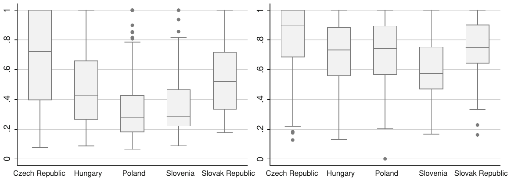

Determinants of Bank Performance in Transition Countries: A Data Envelopment Analysis
Tomas Havranek, Zuzana Irsova (2013), "Determinants of Bank Performance in Transition Countries: A Data Envelopment Analysis." Transition Studies Review 20(1): 1-17. https://doi.org/10.1007/s11300-013-0270-x.
Transit Stud Rev, DOI 10.1007/s11300-013-0270-x
TRANSITION FINANCE AND BANKING RESEARCH
Tomas Havranek · Zuzana Irsova
© CEEUN 2013
JEL Classification C13 · G21 · L25
Electronic supplementary material The online version of this article (doi: 10.1007/s11300-013-0270-x) contains supplementary material, which is available to authorized users.
T. Havranek, Czech National Bank, Prague, Czech Republic
T. Havranek · Z. Irsova, Charles University, Prague, Czech Republic, e-mail: zuzana.irsova@ies-prague.org
Keywords: Banking, Efficiency analysis, Data envelopment analysis, Central and Eastern Europe, Transition countries
Abstract
We analyze what drives bank efficiency in the transition countries of Central Europe and compare the results with those for the United States. This paper is one of the few that use data envelopment analysis for the computation of efficiency scores in transition countries, and, to our knowledge, it is the first to explore systematically how different specifications of data envelopment analysis affect the results. Our findings corroborate the common wisdom that foreign-owned banks operating in transition countries are more efficient than domestic banks. While in the United States large banks are in general more efficient, the result for transition countries depends on the design of data envelopment analysis.
Introduction
A key precondition for efficient functioning of the economy is efficient intermediation provided by the banking sector. Therefore, bank efficiency measurement has become the topic of many empirical studies in financial economics. This stream of research is especially useful for policy makers in transition countries, who have been in the last two decades faced with difficult choices concerning the timing and manner of bank privatization.
Bank efficiency is usually examined within the so-called stochastic frontier methodology. Stochastic frontier analysis is a standard method of economic modeling that ranks banks according to their efficiency; that is, the method computes relative efficiency scores. The resulting scores are then regressed on a number of potential determinant factors of bank efficiency, such as the size of the bank or the composition of the bank’s balance sheet. In a recent paper, however, we have shown that the design of stochastic frontier analysis is crucial for the reported results (Irsova and Havranek 2011).
An alternative to stochastic frontier analysis is a non-parametric method called data envelopment analysis. This method is more flexible, but has been applied much less frequently to the examination of bank efficiency, especially for transition countries. To the best of our knowledge, there is no study that would formally trace the differences in results to the differences in the design of data envelopment analysis. We use data on the United States and transition countries of Central Europe (the Czech Republic, Hungary, Poland, Slovenia, Slovakia) to bridge this gap in the literature.
The remainder of this paper is organized as follows. “Methodology and Data” defines the methodological background and provides summary statistics on variables from the datasets on the United States and transition countries. The estimated efficiency scores for both datasets and different designs of data envelopment analysis are reported and discussed in “Empirical Results”. Finally, “Conclusion” summarizes the paper.
Methodology and Data
Apart from the econometric approach to estimate efficiency, there is an extensive branch of literature employing procedures of the mathematical linear programming (LP). One of the widespread deterministic techniques involves data envelopment analysis (DEA), encompassing a large variety of applications (and forms such as measures with discretionary and categorical inputs and outputs, a priori knowledge or window analysis; more in Cooper et al. 2004). DEA was formally developed by Charnes et al. (1978), although its beginnings are rooted in the work of Farrell (1957) seeking for better models on productivity evaluation (later generalized to the concept of efficiency).
DEA was constructed specifically to measure technological efficiency in sectors where prices are not available or are not reliable enough (Bauer et al. 1998). Bauer et al. also claim that the assumption of cost-minimizing or profit-maximizing behavior may not be appropriate. Nevertheless, this theoretical part of DEA analysis exists and evolves; and besides a common technological efficiency estimation, the cost-based frontier applications are not rare in the banking DEA-efficiency articles (Ferrier and Lovell 1990; Ferrier et al. 1993; Cummins and Zi 1997; Kuosmanen and Post 2001; Havrylchyk 2006 and others). The present DEA background accounts for profit and revenue efficiency as well (more in Cooper et al. 2004 or Coelli et al. 2005).
The non-parametric measurement of DEA creates a piecewise linear convex frontier that envelopes input and output data, relative to which costs are minimized or profit/revenue is maximized. Efficiency scores are then calculated from the frontiers generated by a sequence of linear programs.
Methodology—Data Envelopment Analysis
DEA considers a decision-making unit (DMU, which represents a bank in this study) capable of processing inputs into outputs. Assume n banks, each producing s different outputs using m different inputs. The relative efficiency1 score of a DMU p we get by solving a fractional program defined by extremal optimization (maximization) of the ratio of weighted sum of outputs to weighted multiple input (=virtual output to virtual input ratio) subject to the constraints of nondecreasing weights and efficiency measure (the earlier mentioned ratio) less than or equal to one. This involves finding the optimal weights so that efficiency measure is maximized (banks choose their input and output weights that maximize their efficiency scores). Formally, this fractional form is defined as:
where , , and denotes output k produced by bank i, stands for input j used by bank i, and are weights given to output k and input j.
Fractional program (1) is converted through Charnes-Cooper transformation (assuming denominator of the ratio—the weighted sum of inputs —equal to one, so that a trap of infinite number of solutions is avoided) into the linear program, known also as the multiplier form (2) of fractional program (1):
Solving multiplier form (2) n-times for each bank gives us the relative efficiency scores of all p DMUs. However, the dual problem to this form, so-called envelopment form is usually utilized, because it is subject to fewer restrictions:
where is the efficiency score, and are dual variables. The original CCB model (model of Charnes et al. 1978), just as the envelopment form (3) here, assumes constant returns to scale (CRS, technology using a unit isoquant) but imposing a restriction on to be equal to 1 for allows for variable returns to scale (VRS), or the BCC model (developed by Banker et al. 1984).
The assumption of CRS, even if frequently used, is appropriate only when all DMUs operate at an optimal scale. In a vast majority of cases, including the banking sector, this assumption is violated due to multiple reasons, such as imperfect competition, diverse regulations and restrictions, and so on; then the measure of technical efficiency is co-founded by scale efficiencies (SE). That is the reason why efficiency scores assuming VRS in estimation are larger than or equal to the CRS estimation scores. To avoid SE, the convexity constraint is added, creating VRS convex hull instead of CRS conical hull.2
The fully efficient DMUs are all on the projected efficiency frontier, including those boundary points sited on the section of the piecewise linear frontier that is parallel to axes (perfectly horizontal or perfectly vertical part of the projected frontier). The boundary points, where one can decrease a use of an input and still produce the same output (input slack present), or vice versa (output slack present), are only weakly efficient, not in accordance with Koopmans efficiency definition.3 The weak efficiency implies the existence of non-zero slacks, the points where the changes in proportions associated with mix inefficiencies are located (in inputs as well as in outputs).
A treatment of slacks was proposed by Ali and Seiford (1993), nowadays known as the second-stage LP problem, by maximizing the sum of slacks required to move from a weakly efficient boundary point to an efficient boundary point. The issue of accounting for non-zero slacks is serious and often disregarded in the literature; on the other hand, the treatment is not perfect, especially in multidimensional setting including more inputs and outputs: first, by maximization it identifies the furthest instead of the nearest efficient point; second, it looses a property of being invariant to units of measurement, contrary to the first stage. Note that the residual computation of allocative efficiency as the ratio of economic and technical efficiency4 will include any slacks into the measure. This is often justified by the fact that the slack reflects an inappropriate input mix (Ferrier and Lovell 1990, p. 235). For cost minimization and revenue maximization, the allocative inefficiency in input and output mix selection works in a similar way.
Another issue needs to be addressed: the input-orientation in technical efficiency measure improves efficiency through proportional reduction of input quantities, without altering produced output quantities. This is in accordance with the estimated technical efficiency for cost frontier. A reverse logic is behind output-oriented measures—improvement in efficiency happens through proportional expansion of output quantities without quantitatively changing the inputs used. Such a maximization problem is a specification of technological efficiency estimation for the revenue frontier. Coelli and Perelman (1999) found a strong correlation between these two measures, suggesting that the choice of orientation has only a minor influence. Profit evaluation is a different story, as the technical efficiency can be measured with both orientations. This choice affects the decomposition of economic overall efficiency into technical and allocative one. Also, the measure of profit efficiency is not necessarily bounded between 0 and 1, as it is valid for cost and revenue efficiencies (profit efficiency can be even negative, or undefined if maximum profits are 0). The difference between the maximum and the actual profit normalized by the firm’s cost measures the return on expenditures lost due to inefficiency. Output and input oriented models estimate identical frontiers (identify same set of efficient DMUs), only inefficient DMUs differ. Both specifications only produce overall equivalent values under the assumption of CRS.
There are some shortcomings to DEA methodology, the most relevant of which are summarized by Coelli et al. (2005):
- strong influence of the estimated frontier by outliers and measurement errors;
- biased results stemming from an exclusion of important inputs or outputs, small number of observations produces large proportion of DMUs to be on the efficiency frontier;
- inclusion of more DMUs into the estimation may decrease the average score as the efficiency is estimated relatively to the best-practice DMUs, addition of extra input or output can only increase the technical efficiency score;
- another bias can be caused by treating heterogeneous inputs/outputs as homogeneous.
Dataset
This paper employs banks’ balance sheet and income statement data for a sample of Central European and US banks for the period of 1995–2006, obtained from the BankScope database (Bureau van Dijk Electronic Publishing). For variables definition we choose the most commonly used intermediation approach (Sealey and Lindley 1977). For the methodological basis of DEA software, we need the output and input quantities as well as their prices (based on the microeconomic theory, costs are the product of input prices and quantities, revenue is the product of output prices and quantities, and profit is the difference between revenue and cost, see Table 6 (supplementary material)).
Summary statistics on input and output quantity and price variables from the two different datasets for period 1995–2006 are displayed in Tables 7 and 8 (supplementary material). Three measures of bank output are included into the estimation: total loans , other operating assets and deposits . Output prices p have equivalent indices— as total loans interest rate, price for other operating assets , and deposits fee . Furthermore, we have three inputs (for the USA only two inputs as we do not have data on depreciation): personnel expenses denoting labor input, fixed assets as physical capital representation, and the sum of deposits and other fundings standing for funds. The two corresponding input prices will then be the price of labor defined as the ratio of personnel expenses over total assets, the price of the capital (depreciation over fixed assets), and price of funds charactered as the fraction of interest expenses on the sum of deposits and other funds. It needs to be noted that output and input price definitions are not perfectly accurate approximations. Data available for estimation were extracted from the interest income and other incomes and interest expenses (following the usual practice in literature, output prices are measured by dividing appropriate revenue by its respective output value; similarly, appropriate expenditures are divided by the dollar value of the respective input).
We use the software DEAFrontier developed by Joe Zhu to calculate bank efficiency scores. Restricted by the computational capabilities of the software’s analytical tool we limited the number of cross-sectional units for the US dataset below 200 (putting transitional dataset to balanced panel would mean a significant data loss). Removal of the observations led us to create a balanced panel over twelve years of complete time-series dimension (Table 7, supplementary material)—the choice of which banks to eliminate was therefore random, led only to create a balanced panel: the frontier of the same banks over several years reflects better the structural and environmental chages on the market. Finally, a balanced data on 198 US banks was extracted, leaving total number of 2,376 observations. Additionally in Table 8 (supplementary material), the unbalanced transitional dataset consists of 110 banks from 5 different countries (the Czech Republic, Hungary, Poland, Slovenia and the Slovak Republic) making total of 932 panel observations. The present authors are also aware of the heterogeneity in the sample (will be checked), which might produce biased results in DEA estimation.
Table 6 (supplementary material) summarizes the configuration of the program to estimate the scores (Zhu 2008). Variable denotes output k produced by bank i, stands for input j used by bank i for , , and ; and are respective prices. and are the efficiency scores, the scalars; is the dual variable, vector of constants, an intensity vector forming convex combinations of observed input and output vectors. Variable (and ) in the part of optimization problem estimation is the solution of technical efficiency LP estimation, the input (output) vector that minimizes the cost of producing the observed level of output (maximizes revenue from observed level of input), given input prices (and output prices) and technology.
The first column of Table 6 (supplementary material) is the cost efficiency program: the first line represents a dual problem, the envelopment form of LP (2), restricted by several limitation rules. The first of them requires the convex combination of all DMUs’ inputs to be lower or equal than the input vector of DMUs p, which are being evaluated. The second restriction concerns outputs; the convex combination of all DMUs’ observed outputs can not be smaller than the output vector of DMUs, whose efficiency is being computed. Constraints on specify variability in returns to scale and the interval for less or equal to one. If , a bank is technically Farrell-efficient, so that it lies on the estimated efficiency frontier. Radial contraction of the input vector produces a projected point , a linear combination of the observed data points, on the surface of this technology. All the constraints should ensure this projection to behave correctly; that is, to stay inside the feasible set.
For both regions, panel data are available but cross-sectional year-by-year estimates are going to be reported, in the strict sense—as these are considered to be estimates for panel data (see Thompson et al. 1997; Kyj and Isik 2008; Grigorian and Manole 2002 or Havrylchyk 2006). The classical DEA panel data estimations include so-called window analysis, a moving-average analogue, averaging over the periods of time covered by the window (proposed by Charnes et al. 1985); or Malmquist index (introduced in Caves et al. 1982, 1982) measuring productivity change and decomposing this change into the technical change and technical efficiency change over a time period. Last but not least, we provide an analysis of possible determinants of bank efficiency (see Table 5, supplementary material).
The regressors are consequently reported in the Table 5 (supplementary material) as follows:
llr_gl loan loss reserve/gross loans, one of the profitability ratios (the higher the ratio the poorer the quality of the loan portfolio will be). It is a portion of a fund’s earnings or permanent capital that serves as a reserve against possible loan losses, unavailable for lending purposes. Generally, banks keep these reserves in order to save itself from profit falls so that in bad times bank reduces the reserve in order to increase its profit (−). For cost efficiency, this ratio is expected to have opposite sign (+) to the profit efficiency.
e_ta equity/total assets. This ratio should behave similarly to tcr, so that more cost efficient banks usually have higher equity to assets ratio (+). The higher this figure is, the more protection is afforded to the bank by the equity invested in it.
cf_l capital funds/liabilities, kind of a capital ratio, characterizing how bank is able to cover liabilities with capital funds. One can expect that increase in liabilities may enhance costs and decline the profits; therefore, decreasing ratio can be negatively related to the cost efficiency and positively to the profit efficiency. On the other hand, better funding is usually cost-decreasing (+).
nim net interest margin shows the assets’ efficiency (net interest income expressed as a percentage of earning assets). The higher this figure the cheaper the funding, so that we expect a in positive relation with profit efficiency (+).
roaa return on average assets. This ratio calculates the yield of the total assets of a bank in %, it is a measure of performance and higher efficiency is expected to be correlated with better performance [roaa significantly positive more for profit (+) than for cost efficiency].
roae return on average equity. This ratio shows the profitable capability of the bank and estimates the efficiency with which the bank exploits its equity; roaa and roae are highly correlated, therefore there is probably no need to include roae into the study.
cir cost to income ratio (or efficiency ratio) is probably the most questionable variable in this regression. Knowing that cost and profit efficiency are highly negatively correlated; it is expected that banks with high costs have also high income and vice versa. On the other hand, increase in costs as well as decrease in profits should increase the ratio (−).
nl_ta net loans/total assets is a liquidity ratio indicating what percentage of the assets of the bank is tied up in loans. Lower liquidity (higher ratio) can be accompanied by higher costs (−) and inexplicit change in profits.
nl_dep net loans/customer and short-term funding, the higher figure, the lower liquidity. It represents a percentage ratio of short-term funds tied up in loans, and should act similarly to the previous ratio [lower cost efficiency, higher ratio (+)].
large = 1 if total assets over 1 billion USD, denotes large banks in sense of total assets.
foreign = 1 if a bank has >50 % foreign shareholders.
Empirical Results
The main advantage of using panel data is the possibility to observe each DMU more than once over some period (Kyj and Isik 2008). As mentioned in the previous section, DEA methodology is not adapted for the regular panel estimation, well-known to stochastic approaches. The year-to-year efficiency estimates have been widely used in many articles on DEA. For example, Berger (1995) says that the random-error deviations tend to average out in the long-run, and the remaining part is assigned to the managerial inefficiency, the maintained bad decisions over time. Moreover, the individual year-to-year frontier allows for the adjustment to market conditions and other changes banks go through; especially accounting for the transitional countries. Therefore, many authors regard this as a better choice than a single multi-year frontier (Kyj and Isik 2008; DeYoung and Hasan 1998).
With a reference to the above-mentioned issue, we will apply the yearly estimation to both samples; for the US reduced sample of balanced panel dataset with 198 banks over the whole period of time, and for the unbalanced panel of transitional countries.
Comments on the Results for the US Dataset
The available panel, albeit balanced, is reduced from 5,277 to 2,376 overall observations, a significant loss in the degrees of freedom. As Table 1 suggests, we tried to alter the definition of the model to see the order correlation changes (2 or 3 outputs, CRS vs. VRS model, cost vs. revenue model). In addition, the sample’s heterogeneity was not eliminated by observations reduction (the null of Kruskal-Wallis equality-of-populations rank test cannot be rejected on a reasonable level of significance only for over years and over large banks).
While in the stochastic approach authors use the actual value of costs as the “quantity to be minimized” for particular banks, DEA takes a projected product of input prices and quantities to calculate these costs. Second, the output prices were excluded from the profit function. A reasoning behind can be found for example in Humphrey and Pulley (1997): the standard approach (of profit efficiency computation) assumes perfect competition, where along with output quantities also output prices are exogenous (as a part of external environment) and banks are limited in their choices among the quantities of output (and input).
Table 9 (supplementary material) summarizes the results of DEA estimation for the US balanced sample on the cost and revenue efficiency. Referring to “Methodology and data”, the cost and revenue efficiencies are bounded between zero and one, for 1 being the fully x-efficient bank situated on the projected frontier, while 0 score corresponds to the bank not efficient at all. Profit efficiency is not bounded and can reach even negative values. The scores for profit and revenues using three outputs are not reported (the program is not feasible for this set of data and restrictions).
The two tricomlumns of Table 9 (supplementary material) are divided according to the treatment of the returns to scale, CRS followed by the unconstrained assumption, VRS. For each of these assumptions, the cost efficiency with 2 outputs ( and from Table 7 (supplementary material)) and two inputs (Ceff2y), and three outputs with two inputs (Ceff3y) is reported, next to the revenue efficiency with two outputs and two inputs (Reveff2y). Table 14 in the supplementary material shows the cost and revenue efficiency DEA estimates for the overall average score and subsample large through all years examined.
Changes in scores of Table 9 (supplementary material) follow the theoretical literature. We know already that scale efficiencies SE increase the CRS scores to VRS scores, if SE present; therefore VRS ≥ CRS as table displays. Their score difference ranges between approximately 9–20 % for cost efficiencies with two outputs, 8–26 % with three outputs and 4–20 % for the revenue scores. The largest cost gap by scaling confront the USA in 1996 and 1997, indicating possible imperfections on the market (or an influential bank-structure change such as an increase in mergers or acquisitions); the smallest gap is around the year of 2003, signifying possible environmental stabilization. Revenue scores behave in the opposite way over the selected period of time except the change from 1999 to 2000. In general, revenue efficiency is higher than the cost efficiency, banks with relatively higher costs are able to manage the revenues more successfully.
| Spearman | (1) C | (2) C | (3) C | (4) C | (5) R | (6) R |
|---|---|---|---|---|---|---|
| (1) C c2 | 1 | |||||
| (2) C c3 | 0.95 | 1 | ||||
| (3) C v2 | 0.52 | 0.50 | 1 | |||
| (4) C v3 | 0.43 | 0.49 | 0.88 | 1 | ||
| (5) R c2 | −0.25 | −0.22 | −0.06 | −0.01 | 1 | |
| (6) R v3 | −0.15 | −0.13 | 0.17 | 0.20 | 0.76 | 1 |
Spearman correlations between US models used, reporting cost (C) and revenue (R) models with VRS (v) or CRS (c) assumption and two (2) or three (3) outputs
For the cost estimation program, outputs are relevant only in restricting the projection to stay inside the feasible set (see Table 6, supplementary material). It was also expected for the scores with more outputs to be higher as the addition of extra input or output can only increase the technical efficiency score (and cost efficiency is a product of allocative and technical efficiency). The average difference between scores using three outputs and two outputs is 3 % for CRS and 4 % for VRS. Standard deviation is larger for unrestricted returns to scale assumption.
Table 14 in the supplementary material shows that the revenue efficiency is about 1 % larger for banks with total assets over 1 billion USD (see box plots of Figs. 5, 6 (supplementary material) for better visual comparison over years); however, the comparison between cost efficiencies using CRS and VRS assumption is inconclusive and standard deviations are extremely large. Correlation coefficients provided in Table 1 confirm the previous results: change in the number of outputs changes the rank order of banks much slighter (correlation coefficients 88 and 95) than relaxing the restrictions on returns to scale (43–52). Correlations between cost and revenue efficiencies are very low or even negative, signifying that profits play large part on the result and banks with relatively high cost efficiency tend to have rather lower revenue efficiency. The relevance of profits (difference between costs and revenues) is the reason why we expect the possible explanatory variables to revenue efficiency score to influence (or to be influenced, the causality is not discussed) more or less in the same direction as the profit scores (Fig. 1).

Identification of efficiency estimates’ determinants: the possible problem connected to this stage appears once the variables used in the DEA estimation have high correlation with the response variable; then the results are likely to be biased. This is, however, not the case because their simple correlation coefficients do not exceed ±0.41. Table 2 briefly summarizes the main results of the OLS and Tobit panel regression from Table 10 (supplementary material) in terms of influence direction. For cost efficiency estimation, nim, cir, nl_ta and nl_dep copy the signs’ expectations, other variables provide rather inconclusive results. Inclusion of variable large in the regression produces significant, but opposite change on the score for CRS and VRS.
| Variable | Cost efficiency | Revenue efficiency | ||
|---|---|---|---|---|
| Expected | CRS/VRS | Expected | CRS/VRS | |
| llr_gl | + | ? / ? | − | ? / ? |
| e_ta | + | + / ? | ? | − / ? |
| cf_l | + | − / ? | ? | + / + |
| nim | ? | − / − | + | + / + |
| roaa | ? | ? / − | + | − / − |
| cir | − | − / − | − | − / − |
| nl_ta | − | − / − | ? | + / + |
| nl_dep | + | + / + | ? | + / + |
| large | + | + / − | − | − / − |
All the revenue efficiency determinants used are significant except of llr_gl and e_ta; the cf_l, nim, roaa, nl_ta and nl_dep have a positive impact on regressand; an increase in roaa, cir and large affect the year-to-year revenue efficiency scores negatively. The negative sign of the returns on average assets roaa is against the expectations. Table 10 (supplementary material) also reports the coefficients of determination—over all models used, the highest explanatory power of variance is between the years, rather than within the banks. Especially for cost efficiency, the overwhelming part of the variation in estimates remains unexplained; still, the revenue efficiency models explain less than 40 % of the variation in the efficiency score only.
Comments on the Results for the Transition Dataset
Similarly to the previous subsection estimating efficiencies on the US data, these DEA scores are going to be estimated through 12 different models—each cost, profit and revenue programs have the attributes of constant and variable returns to scale assumptions and use two or three outputs (that is and from Table 8 (supplementary material) or all three outputs and their respective prices and or all three prices). The year-to-year frontier through 1995–2006 makes altogether 932 observations to estimate the cost, profit and revenue efficiency.
Table 11 (supplementary material) reports the details on all three kinds of estimated scores. The positive differences between scores of VRS and CRS assumptions as well as three outputs and two outputs models are acknowledged for cost and revenue frontiers. Data for cost efficiency estimation in the year 1997 are not feasible for DEA program, so that after all, only 856 observations for the cost efficiency are left. The profit efficiency reaches below 0 and above 1—note that while there is an extreme volatility over profit scores estimated for models using two outputs, the standard deviation is larger only in the year of 1995 with the smallest number of observations 55 when we take a look at the models using all three outputs.
The difference between the CRS and VRS scores for cost efficiency is very similar when using two or three outputs (14.5–21 %) and the profit efficiency using three outputs follows this range as well (13.5–21 %). Different pattern is demonstrable by 2-output case, large deviations from the mean distort the estimates. Also for this reason, the estimated revenue scores differences between VRS and CRS are larger for 2-output than 3-output models (5–24 vs. 10.5–18 %). Interestingly, the cost efficiency differences between the models of 3 and 2 outputs are smaller when accounting for VRS assumptions (0–7 % instead of 10 % range). Profit models record even negative differences, revenue differences in efficiencies range between 3.5–20 %, for CRS scores 7–20 % only.
A closer look on group differences between estimated scores is provided by Table 13 in the supplementary material. The scores of cost efficiency are only slightly higher when the third output is included. Problematic part is the revenue efficiency—VRS assumption did not change the average order of the groups; large banks have the highest revenue score, followed by the foreign banks; however, the CRS assumption turned the foreign group to be the one with highest revenue efficiency in the model with three outputs, in comparison to the 2-output model, where foreign group obtained the smallest average score from all three groups. Rank order by groups is changed for cost efficiency, when different assumptions on returns to scale are compared. Commercial banks are close to the overall average, scores of large and foreign groups are higher with VRS by 4–5 %.
Table 3 presents Spearman rank order correlation coefficients between the models used. The significance of employing three instead of two outputs in the cost estimation is not that influential when it comes to ranking of the banks; the correlation coefficients are 0.97 and 0.92 for VRS and CRS assumption, respectively. More troublesome is the fact that when it comes for output prices to take part on the estimation process, the results are suspiciously volatile. It is an object lesson for DEA estimation biases, as DEA suffers from missing variables, outliers or misspecification influences (of course, one cannot definitely reject a presence of human error in the process). Nevertheless, the three outputs specification is relatively stable.
The difference in correlations between 3-output profit and their respective 2-output profit models are only 10 % higher than the correlations with their respective cost models, much larger differences yield any 2-output and 3-output specifications of profit and revenue models (e.g., such coefficients between revenue models range from 0.2 to 0.24).
Figure 7 (supplementary material) depicts the division of computed scores for two outputs CRS model of cost and revenue efficiency in transitional countries, computed as the year-by-year common frontier. The line inside the box represents the median value. We observe highest simple average cost score in the Czech Republic (40.9 %), followed by 31.7 % of Slovakia, score 24.1 % of Hungary, Slovenia with only 21 % and Poland at the bottom. Revenue efficiency order by countries is similar, except the order is Hungary (48 %), the Czech Republic, Slovakia and the rest (Poland with 43 %). Scores in Fig. 8 (supplementary material) yield the same pattern.
| Spearman | (1) C | (2) C | (3) C | (4) C | (1) P | (2) P | (3) P | (4) P | (1) R | (2) R | (3) R | (4) R |
|---|---|---|---|---|---|---|---|---|---|---|---|---|
| (1) C c2 | 1 | |||||||||||
| (2) C c3 | 0.92 | 1 | ||||||||||
| (3) C v2 | 0.66 | 0.61 | 1 | |||||||||
| (4) C v3 | 0.63 | 0.65 | 0.97 | 1 | ||||||||
| (1) P c2 | 0.32 | 0.36 | 0.28 | 0.30 | 1 | |||||||
| (2) P c3 | 0.42 | 0.44 | 0.35 | 0.35 | 0.53 | 1 | ||||||
| (3) P v2 | 0.27 | 0.27 | 0.50 | 0.51 | 0.67 | 0.40 | 1 | |||||
| (4) P v3 | 0.30 | 0.30 | 0.54 | 0.55 | 0.40 | 0.65 | 0.64 | 1 | ||||
| (1) R c2 | 0.13 | 0.22 | 0.06 | 0.08 | 0.34 | 0.18 | 0.16 | 0.12 | 1 | |||
| (2) R c3 | 0.29 | 0.29 | 0.26 | 0.25 | 0.40 | 0.83 | 0.28 | 0.52 | 0.09 | 1 | ||
| (3) R v2 | 0.05 | 0.10 | 0.26 | 0.28 | 0.28 | 0.13 | 0.33 | 0.33 | 0.76 | 0.06 | 1 | |
| (4) R v3 | 0.23 | 0.20 | 0.46 | 0.43 | 0.31 | 0.62 | 0.48 | 0.73 | 0.02 | 0.75 | 0.24 | 1 |
Spearman correlations between models used in Table 11 (supplementary material). The three quaternions report cost (C), profit (P) and revenue (R) models with VRS (v) or CRS (c) assumption and two (2) or three (3) outputs used
The signs of coefficients from the panel OLS and Tobit regression in Table 12 (supplementary material), the second stage of estimation searching for determinants of the estimated efficiencies (in concrete, cost and revenue VRS scores using 2 outputs), are summarized in Table 4 above. Likewise for the USA scores, we report the expectations for variables possibly influencing the scores (or vice versa) as well. Determinants include the dummies for transitional countries, separation of larger banks and banks controlled by foreign investors. We observe that a wast majority of the results contradicts the expectations, is inconclusive or not significant. Variable roaa, cir, slo and large pursue the expected direction for revenue efficiency; e_ta and nl_ta yield the same results in the revenue part despite the difference in returns to scale (RTS) assumption. For cost efficiency the only RTS robust variables are dummies for Hungary, Poland and Slovenia, in negative relation toward the score.
Another dimension of Table 12 (supplementary material) are the coefficients of determination. The models used for transitional countries are entitled with larger explanatory power in comparison to ones used for the US DEA. Models again account for variations between the years better than for the variations within the DMUs; especially, when the CRS assumption is involved. The CRS revenue efficiency model has almost 70 % of the variation in the dependent variable explained, compared to 36 % explained in the cost score. Not all the regressors here were available for all DMUs, therefore, only 528 and 581 observations for the cost and revenue scores, respectively, were processed.
| Variable | Cost efficiency | Revenue efficiency | ||
|---|---|---|---|---|
| Expected | CRS/VRS | Expected | CRS/VRS | |
| llr_gl | + | − / ? | − | − / ? |
| e_ta | + | − / ? | ? | + / + |
| cf_l | + | ? / ? | ? | ? / − |
| nim | ? | ? / ? | + | ? / ? |
| roaa | ? | + / ? | + | + / ? |
| cir | − | ? / ? | − | − / ? |
| nl_ta | − | ? / ? | ? | + / + |
| nl_dep | + | ? / ? | ? | ? / − |
| cr | + | ? / ? | ? | ? / + |
| hu | ? | − / − | ? | − / ? |
| pl | ? | − / − | − | − / ? |
| slo | + | − / − | − | − / − |
| large | + | − / ? | − | − / ? |
| foreign | − | ? / ? | + | − / ? |
Conclusion
This paper focuses on the consequences of changes in the specification of the deterministic data envelopment analysis and the respective search for the determinants of bank efficiency. The data envelopment method of frontier estimation is less common than the prevailing stochastic approaches when it comes to the economic efficiency estimation (primarily the revenue and profit efficiency)—especially in the literature focused on transitional countries. This is not a surprising pattern, because in order to use output prices, necessary for the application of data envelopment analysis, researchers have to struggle with problems concerning the correct definition, reporting and measurement of these variables.
We examine bank efficiency for the USA (a balanced panel of 198 banks) and 5 Central and Eastern Europe countries (an unbalanced panel), including the Czech Republic, Hungary, Poland, Slovenia and Slovakia through the year-to-year estimation for a period of 1995–2006. The basic methodological variations include cost, profit and revenue efficiency estimation, the assumption of CRS and VRS plus inclusion of two or three outputs into the DEA routine.
The results for the U.S. data sample for period of 1995–2006 can be summarized as follows:
- the VRS assumption brings a larger standard deviation than the CRS assumption;
- the average difference between VRS and CRS in cost efficiency scores reaches 15 % when using two outputs and 16 % when using three outputs;
- the average difference between 3- and 2-output models is 3 % with the CRS and 4 % for the VRS assumption;
- a change in the number of outputs changes the rank order of banks, and has much lower effects than relaxing the restrictions on returns to scale;
- revenue efficiency is about 1 % higher for banks with total assets over 1 billion USD;
- revenue efficiency is higher than cost efficiency (almost twice as large, except the years 2003 and 2004), banks are more successful in gaining profits on average. Better management of costs is often accompanied by smaller efficiency in revenues.
The results for the transition data sample for period of 1995-2006 can be summarized as follows:
- the average difference between the VRS and CRS cost scores is 18 %, and 3 % between 3-output and 2-output cost models;
- profits with 2-output models are extremely volatile (rank order of banks compromised), the average difference between VRS and CRS profit 3y scores is 14 %;
- revenues are driven by profits, the average difference between VRS and CRS scores is 14 % (2y), and 13.5 % between 3-output and 2-output cost models (VRS);
- foreign banks report higher cost and revenue scores, large banks have higher average score with the VRS assumption but lower with the CRS.
The inefficiency correlates regression yields mixed results, especially when we compare the VRS and CRS assumptions, and many of the expected correlates are insignificant. A larger part of the variance in measured cost efficiencies remains unexplained, although this is not the case for revenue efficiency.
The most important caveat of this study is the unbalanced character of the dataset corresponding to transition countries, and averaging of the US efficiency estimates over years. Moreover, it may be argued that some of the countries in our transition datasets cannot be considered “transition” for the entire sample that we use (some of those countries are now considered developed by the World Bank); nevertheless, this issue not important for our overall results. Concerning future research, it may prove fruitful to employ the production approach in defining inputs and outputs or the profit-oriented approach as outlined in Berger and Mester (2003).
Acknowledgments
We thank Oldrich Dedek, Petr Jakubik, Michal Mejstrik, and seminar participants at Charles University for helpful comments on previous versions of this manuscript. We gratefully acknowledge financial support from the Grant Agency of Charles University (grant #89910) and from the Grant Agency of the Czech Republic (grant P402/11/0948). Corresponding author: Zuzana Irsova, zuzana.irsova@ies-prague.org. The views expressed here are ours and not necessarily those of our institutions. All remaining errors are solely our responsibility.
References
- Ali A, Seiford L (1993) The mathematical programming approach to efficiency analysis. In: Fried HO, Lovell CAK, Schmidt S (eds) The measurement of productive efficiency, pp. 120–159. Oxford University Press, New York
- Banker R, Charnes A, Cooper W (1984) Some models for estimating technical and scale inefficiencies in data envelopment analysis. Manage Sci 30:1078–1092
- Bauer P.W, Berger A.N, Ferrier G.D, Humphrey D.B (1998) Consistency conditions for regulatory analysis of financial institutions: a comparison of frontier efficiency methods. J Econ Bus 50(2):85–114
- Berger AN (1995) The profit-structure relationship in banking–tests of market-power and efficient-structure hypotheses. J Money Credit Bank 27(2):404–31
- Berger A.N, Mester L.J (2003) Explaining the dramatic changes in performance of US banks: technological change, deregulation, and dynamic changes in competition. J Financial Intermed 12(1):57–95
- Caves DW, Christensen LR, Diewert WE (1982a) Multilateral comparisons of output, input, and productivity using superlative index numbers. Econ J 92(365):73–86
- Caves DW, Christensen LR, Diewert WE (1982b) Multilateral comparisons of output, input, and productivity using superlative index numbers. Econometrica 50:1393–1414
- Charnes A, Clark T, Cooper W, Golany B (1985) A development study of data envelopment analysis in measuring the efficiency of maintenance units in the US Air force. Ann Oper Res 2:95–112
- Charnes A, Cooper WW, Rhodes E (1978) Measuring efficiency of decision-making units. Eur J Oper Res 2:429–444
- Coelli T, Perelman S (1999) A comparison of parametric and non-parametric distance functions: with application to European railways. Eur J Oper Res 117(2):326–339
- Coelli TJ, Rao DP, O’Donnell CJ, Battese GE (2005) An Introduction to efficiency and productivity analysis. Springer Science + Business Media, Inc., Berlin, ISBN: 0-387-25895-7
- Cooper W, Seiford L, Zhu J (2004) Data envelopment analysis: history, models and interpretations. In: Cooper W, Seiford L, Zhu J (eds) Handbook on data envelopment analysis. Kluwer Academic Publishers, Boston
- Cummins JD, Zi H (1997) Comparison of frontier efficiency methods: an application to the US life insurance industry. Center for Financial Institutions Working Papers 97-03, Wharton School Center for Financial Institutions, University of Pennsylvania, Philadelphia
- Deprins D, Simar L, Tulkens H (1984) Measuring labour-efficiency in post offices. In: Marchand M, Pestieau P, Tulkens H (eds) The performance of public enterprises: concepts and measurements. North-Holland, Amsterdam
- DeYoung R, Hasan I (1998) The performance of de novo commercial banks: a profit efficiency approach. J Banking Finance 22(5):565–587
- Farrell JM (1957) The measurement of productive efficiency. J Royal Stat Soc 120(1):253–290
- Ferrier GD, Grosskopf S, Hayes K, Yaisawarng S (1993) Economies of diversification in the banking industry: a frontier approach. J Monetary Econ 31(2):229–249
- Ferrier GD, Lovell CAK (1990) Measuring cost efficiency in banking: econometric and linear programming evidence. J Econ 46(1–2):229–245
- Grigorian DA, Manole V (2002) Determinants of commercial bank performance in transition: an application of data envelopment analysis. Policy Res Working Paper Series 2850, The World Bank
- Havrylchyk O (2006) Efficiency of the Polish banking industry: foreign versus domestic banks. J Banking Finance 30(7):1975–1996
- Humphrey DB, Pulley LB (1997) Banks responses to deregulation: profits, technology, and efficiency. J Money Credit Banking 29(1):73–93
- Irsova Z, Havranek T (2011) Bank efficiency in transitional countries: sensitivity to stochastic frontier design. Trans Stud Rev 18(2):230–270
- Koopmans T (1951) An analysis of production as an efficient combination of activities. In: Koopmans T (ed), Activity analysis of production and allocation, cowles commission for research in economics, Monograph No. 13, Wiley, New York
- Kuosmanen T, Post T (2001) Measuring economic efficiency with incomplete price information: with an application to European commercial banks. Eur J Oper Res 134(1):43–58
- Kyj L, Isik I (2008) Bank x-efficiency in Ukraine: an analysis of service characteristics and ownership. J Econ Bus 60(4):369–393
- Sealey J, Calvin W, Lindley JT (1977) Inputs, outputs, and a theory of production and cost at depository financial institutions. J Finance 32(4):1251–1266
- Thompson RG, Brinkmann EJ, Dharmapala PS, Gonzalez-Lima MD, Thrall RM (1997) DEA/AR profit ratios and sensitivity of 100 large US banks. Eur J Oper Res 98(2):213–229
- Zhu J (2008) Manual to DEAFrontier: DEA Add-In for Microsoft Excel.mimeo
ENDNOTES
- A DMU is relatively fully efficient or Farrell-efficient “on the basis of available evidence if and only if the performance of other DMUs does not show that some of its inputs or outputs can be improved without worsening some of its other inputs or outputs”, Cooper et al. (2004). The definition avoids reference to prices or assumptions on weights.
- Note that the assumption of convexity is criticized for there is no reason for this assumption in real terms. That is why non-parametric approaches were enriched by so-called free disposal hull (FDH) method developed by Deprins et al. (1984)—in other words the DEA relaxed of the convexity assumption.
- Koopmans (1951) definition of technical efficiency is stricter than that of Farrell (1957). The former states that a firm is only technically efficient if it operates on the frontier and furthermore that all associated slacks equal zero.
- Allocative efficiency is therefore a radial measure of technical efficiency, a ratio of two measures of distance. Radial efficiency measures are unit-invariant, so that changing the units of measurement does not affect the score in value.